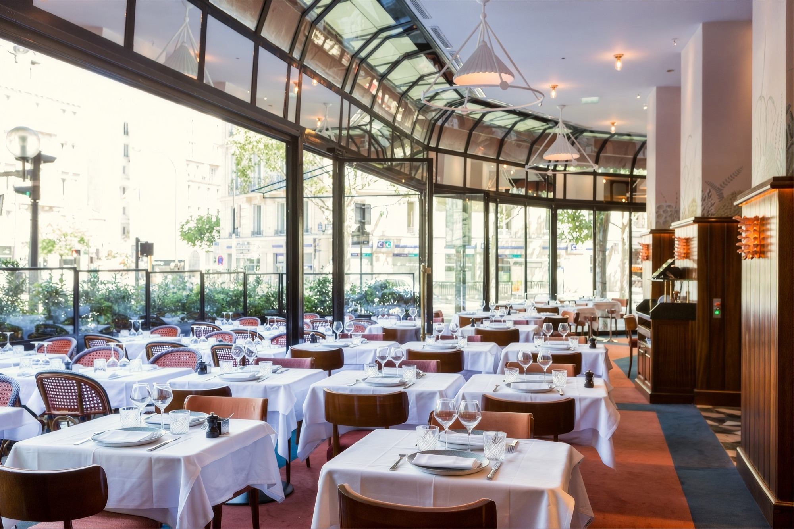

Nos lieux
Brasseries historiques, restaurants, péniche et jardins, à Paris et en Île-de-France : un seul interlocuteur pour toutes nos maisons.

Notre accompagnement
Plutôt que de contacter chaque établissement, confiez votre projet à notre équipe événementielle. Elle connaît chaque salon, chaque terrasse, et vous oriente vers l’adresse juste.
Rencontrer l’équipeVos événements
Du comité de direction à la soirée dansante, retrouvez les lieux qui s’y prêtent, avec leur capacité pour chaque configuration.
Nos quartiers
Commencez par le quartier : nous vous montrons les lieux qui s’y trouvent.
Nos adresses
Des Champs-Élysées à la Bastille, de Saint-Germain aux bords de Seine : survolez la carte pour découvrir nos maisons.
Bertrand Hospitality est la maison art de vivre du Groupe Bertrand, premier groupe français indépendant de restauration et d’hôtellerie.
Au-delà de l’événement
Prolongez l’événement en accueillant vos invités dans nos hôtels parisiens, comme l’Hôtel Norman, à deux pas des Champs-Élysées.
Votre événement
La date, le format, le nombre d’invités : nous vous proposons les lieux qui s’y prêtent, avec un seul interlocuteur du premier échange au jour J.